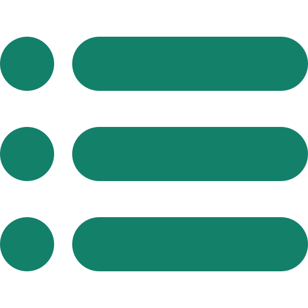
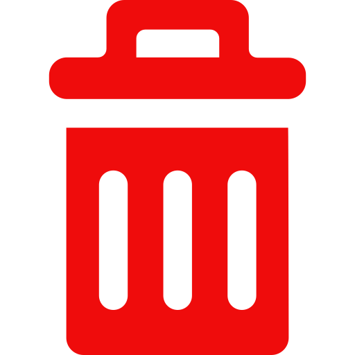

<div class="col-lg-12">
  
  <div class="contenedorNuevaTarea">
    <div class="busqueda" [formGroup]="formCrearTarea">
      <div class="fila">
        
        <label class="nuevaTarea">Nueva tarea</label>
      </div>
      <div class="tlt-container">
        <label class="tlt-agregar">Título</label>
      </div>
      <div class="fila">
        <input type="text" placeholder="Ingrese título…" class="form-control input_titulo" formControlName="descripcion">
        <label class="opt-tarea">Tarea completada</label>
        <input class="checkbox" type="checkbox" formControlName="estado"/>
        <button (click)="guardarTarea()" type="button" class="btn btn-light guardarTarea" [disabled]="formCrearTarea.invalid">
           
          GUARDAR TAREA
        </button>
      </div>
    </div> 
  </div>
  <div class="tablaTareas">
    <div [formGroup]="formBuscar">
      
      <label class="listaTareas">Lista de tareas</label>
      <input type="text" placeholder="Buscar…" class="form-control buscador" formControlName="filtro" (keyup)="buscar()">
    </div>
    <div  class="card tablaContenedor">
      <table class="table">
        <thead>
          <tr>
            <th scope="col">Id</th>
            <th scope="col">Mis tareas</th>
            <th scope="col">Completada</th>
            <th scope="col">Borrar</th>
          </tr>
        </thead>
        <tbody [formGroup]="formActualizar">
          <tr *ngFor="let tarea of tareas | paginate: { itemsPerPage: 5, currentPage: p } | buscador: buscarString">
            <td>{{tarea.id}}</td>
            <td>{{tarea.title}}</td>
            <td><input [checked]="tarea.state" [disabled]="tarea.state" class="checkbox" type="checkbox" (change)="editarTarea(tarea.id, $event)"/></td>
            <td (click)="confirmarEliminarTarea(tarea.id)">
              
            </td>
          </tr>
        </tbody>
      </table>
      <div>
        <pagination-controls 
          (pageChange)="p = $event"
          previousLabel=""
          nextLabel=""
          class="custom-pagination text-center"
        >
        </pagination-controls>
      </div>
    </div>
  </div>
</div>

<div class="modal fade" bsModal #creacionExitosa="bs-modal" [config]="{backdrop: 'static'}" tabindex="-1" role="dialog"
  aria-labelledby="dialog-static-name">
  <div class="modal-dialog modal-sm">
      <div class="modal-content">
          <div class="modal-body">
              <p class="p-modal">
                Tarea creada con Éxito
              </p>
              <div class="row" style="text-align: center;">
                  <div class="col"><button type="button" id="btnDeclinarModal" class="btn btn-primary"
                          (click)="creacionExitosa.hide()">Aceptar</button></div>
              </div>
          </div>
      </div>
  </div>
</div>

<div class="modal fade" bsModal #confirmarEliminar="bs-modal" [config]="{backdrop: 'static'}" tabindex="-1" role="dialog"
  aria-labelledby="dialog-static-name">
  <div class="modal-dialog modal-sm">
      <div class="modal-content">
          <div class="modal-body">
              <p class="p-modal">
                ¿Está seguro de eliminar esta tarea? 
              </p>
              <div class="row" style="text-align: center;">
                <div class="col"><button type="button" class="btn btn-warning"
                  (click)="confirmarEliminar.hide()">Cancelar</button></div>
                  <div class="col"><button type="button" id="btnDeclinarModal" class="btn btn-primary"
                          (click)="eliminarTarea()">Aceptar</button></div>
              </div>
          </div>
      </div>
  </div>
</div>
<router-outlet></router-outlet>
